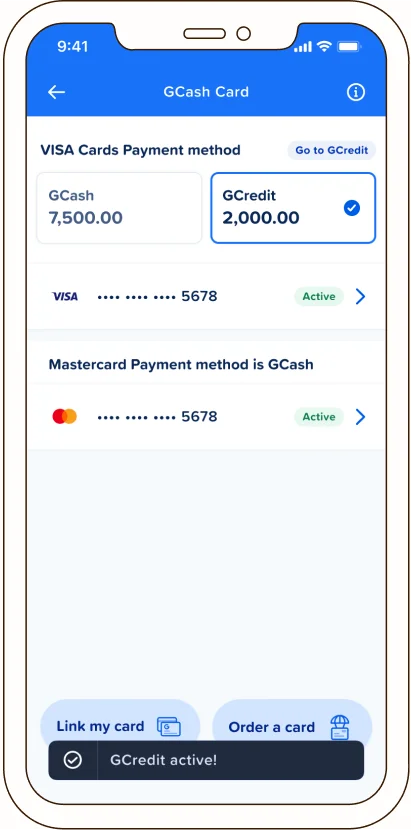
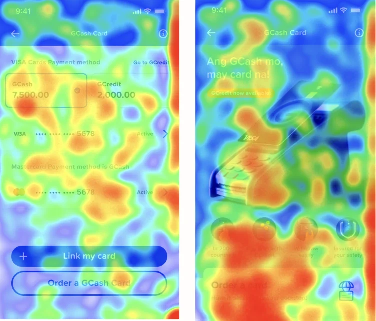

Hybrid Credit-Debit Card
The first of its kind in the Philippines. One card. Two payment methods. No bank account needed

Only 8% of Filipinos have a credit card. Banking requirements keep it that way. Meanwhile GCash's lending product, GCredit, had become one of the most-used features in the app: trusted by millions for everyday borrowing, but limited to in-app payments.
E-wallets had filled the banking gap with debit cards, but every one of them only let users spend from their wallet balance. I saw the opening: bring GCredit onto a physical card. I designed the product from the ground up, expanding GCash's lending and payments verticals in one move, and cutting the barrier to card ownership down to a single valid ID.
thought process
Design decisions
A hybrid card with two payment modes had never existed in the market before. Users needed to understand not just how to use it, but when, and they needed to get that without friction, without reading a manual. So every decision came back to one thing: clarity at the point of payment.
Easy discoverability
GCredit was already trusted in-app, but activating it on a physical card was new territory. A prominent activation badge made sure users immediately understood what the card could do.
Quick switching
The payment-mode switch had to happen in-app, that's just how the Visa network works, and it risked feeling clunky. A single-tap toggle with real-time balance updates made it feel effortless instead.
Easy management
Two payment sources on one card risks confusion at the register. Showing both balances upfront gives users full spending clarity before they even reach the cashier.
solution
Turning a technical constraint into the feature
Because this is a hybrid card, not a dedicated credit card, the Visa network couldn't switch payment mode at the POS terminal. That switch had to happen in-app, before the transaction.
So I made the switch itself the feature. One tap changes the active payment method in real time, with instant confirmation, so users know the change registered before they even approach the cashier, all while seeing their credit balance right alongside it.
For a first-of-its-kind product, a one-time walkthrough wasn't going to cut it. I built a persistent education layer reachable from any screen via an info icon, covering FAQs, feature comparisons, and payment reminders at every stage of use.

research & iteration
Testing what felt clear vs. what was
I ran two rounds of moderated usability testing across iterations, combining heatmaps and click/eye tracking to find where attention and intent diverged from our assumptions.
The toggle didn't read as tappable
Users focused heavily on the balance figures but repeatedly missed the payment-method toggle — the product's most critical interaction. I revised its visual weight and positioning before launch.
Hierarchy fought conversion
Attention landed on the hero image and tagline rather than the CTAs. I restructured the landing page to lead with the action.
